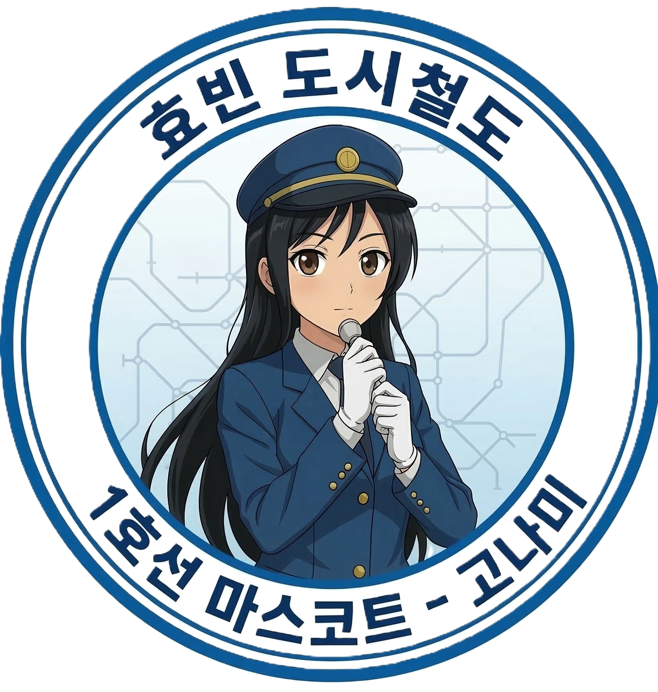

이용안내
승차권 및 운임 안내
효빈도시철도와 효빈덕북권 광역환승할인 제도의 상세 운임 체계를 안내해 드립니다.
1. 기본 운임 및 거리비례제
효빈도시철도 1~6, 8호선은 수도권과 동일한 형태의 통합거리비례제를 채택하고 있습니다. 이동 거리에 따라 요금이 차등 부과되며, 최단 거리를 기준으로 산정됩니다.
| 구분 | 교통카드 (선/후불) | 1회권 / 현금 |
|---|---|---|
| 일반 (만 19세 이상) | 1,500원 | 1,650원 |
| 청소년 (만 13~18세) | 900원 | 1,650원 |
| 어린이 (만 6~12세) | 550원 | 550원 |
거리비례 추가 운임 (일반 기준)
- 기본 운임: 10km 이내
- 10km ~ 50km 이내: 5km 마다 100원 추가
- 50km 초과: 8km 마다 100원 추가
- ※ 청소년은 일반 추가 운임에서 20% 할인 (교통카드 전용)
- ※ 어린이는 일반 추가 운임에서 50% 할인
2. 특례 운임 (7호선 및 빈효선)
노면전차인 7호선은 일반 지하철과 분리된 단독 요금제를 적용합니다.
- 8km 이내 단일 요금:
일반 1,350원 / 청소년 750원 / 어린이 450원 - 8km 초과 시: 일반 지하철 기본 운임(1,500원) 적용
한국철도공사 관할 구역으로 광역철도 별도 요금 체계가 적용됩니다.
- 기본 운임: 1,500원 (10km 이내)
- 추가 운임: 5km 마다 100원
- 시계외 할증 (150원 추가):
천주시 ↔ 효빈광역시 경계 통과 시
효빈광역시 ↔ 약산시 경계 통과 시
3. 효빈덕북권 광역환승할인
효빈광역시와 인접한 덕빈북도(약산, 천주, 선곡, 낭원)를 하나의 대중교통 생활권으로 묶어, 수단 간 환승 시 가장 높은 기본요금 1회만 부과하는 제도입니다.
환승 인정 시간
- 하차 단말기 태그 후 30분 이내
- 심야/조조 (21:00 ~ 07:00) : 60분 이내
- 농어촌버스 및 효빈시 외곽 노선 : 60분 이내
최대 환승 횟수
- 최대 2회 환승 인정 (총 3회 탑승 가능)
- 효빈 도시철도 구간 내 환승은 횟수 차감 없음 (단, 게이트 밖으로 이탈 시 환승 1회 차감)
운영 주체가 달라 환승 게이트가 분리되어 있으므로 이동 시 반드시 교통카드를 태그해야 합니다. (이때 환승 횟수가 1회 차감되며, 200원의 추가 요금이 부과됩니다.)
4. 동일역 8분 재개표 제도
실수로 개찰구를 잘못 통과했거나 급히 화장실을 이용해야 할 경우, 동일한 역에서 일정 시간 내에 다시 개찰구를 통과하면 기본요금이 추가로 부과되지 않는 제도입니다. (1~8호선 적용)
5분 이내 재승차
환승 횟수 차감 없음
추가 요금 면제
5분 ~ 8분 이내 재승차
환승 횟수 1회 차감
추가 요금 면제
8분 초과 시
환승 단절
기본 운임 재부과
5. 교통카드 안내 및 캐릭터 한정판
효빈·덕북 권역 내의 모든 편의점 및 역사 고객안내센터에서 '효빈덕북교통카드(Hyobin-Deokbuk Pass)'를 구매하실 수 있으며, 타 지역 교통카드(티머니, 이즐 등)도 호환 사용이 가능합니다.

기본형 에디션
효빈 청색 & 덕북 녹색 그라데이션
 BEST
BEST
7호선 '임세하' 에디션
학생 필수 소장품 (노선도 1위)

2호선 '하루빈' 에디션
철도 마스코트 콜라보 시리즈
알아두면 유용한 효빈교통 TMI
- 캐릭터 카드 품절 대란: 특히 7호선 임세하 에디션은 출시 직후 매진을 기록하는 경우가 잦습니다. (언니인 세정 씨가 억척스럽게 지켜낸 트램을 기리는 팬심일지도 모릅니다.) 재고 확인은 온라인 굿즈샵 공지를 참고하세요!
- 하차 태그는 필수입니다: 하차 시 단말기에 카드를 태그하지 않으면 환승 할인이 불가능할 뿐만 아니라, 다음 승차 시 최대 구간 요금이라는 매서운 '금융 치료' 페널티가 부과될 수 있습니다. 잊지 말고 꼭 찍어주세요.
- 철도 시설물 훼손 시 '무관용 원칙': 공사 시설물이나 콜라보 캐릭터 광고판 등을 훼손하는 특정 혐오 세력의 테러 행위에 대해, 효빈교통공사는 사과나 합의 없는 무관용 원칙(Zero Tolerance)으로 민·형사상 책임을 끝까지 묻고 있습니다. 성숙한 시민 의식으로 우리 문화를 함께 지켜주세요.